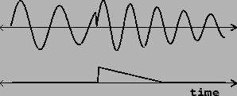

The switch-and-ramp technique also seeks to remove discontinuities resulting from discontinuous control changes, but does so in a different way: by synthesizing an opposing discontinuity which we add to cancel the original one out. Figure 4.6 shows an example in which a synthetic percussive sound (an enveloped sinusoid) starts a note in the middle of a previous one. The attack of the sound derives not from the amplitude envelope but from the initial phase of the sinusoid, as is often appropriate for percussive sounds. The lower graph in the figure shows a compensating audio signal with an opposing discontinuity, which can be added to the upper one to remove the discontinuity. The advantages of this technique over muting are, first, that there need be no delay between the decision to make an attack and the sound of the attack; and second, that any artifacts arising from this technique are more likely to be masked by the new sound's onset.
|  |
Figure 4.7 shows how the switch-and-ramp technique can be realized in a block diagram. The box marked with ellipsis (``...") may hold any synthesis algorithm, which we wish to interrupt discontinuously so that it restarts from zero (as in, for example, part (a) of the previous figure). At the same time that we trigger whatever control changes are necessary (exemplified by the top ADSR generator), we also reset and trigger another ADSR generator (middle right) to cancel out the discontinuity. The discontinuity is minus the last value of the synthesis output just before it is reset to zero.
To do this we measure the level the ADSR generator must now jump to. This is its own current level (which might not be zero) minus the discontinuity (or equivalently, plus the synthesis output's last value). The two are added (by the +~ object at bottom), and then a snapshot is taken. The cancelling envelope generator (at right) is reset discontinuously to this new value, and then triggered to ramp back to zero. The +~ object's output (the sum of the synthesizer output and the discontinuity-cancelling signal) is the de-clicked signal.